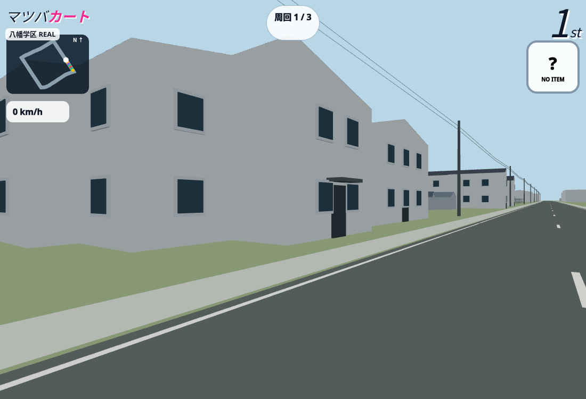
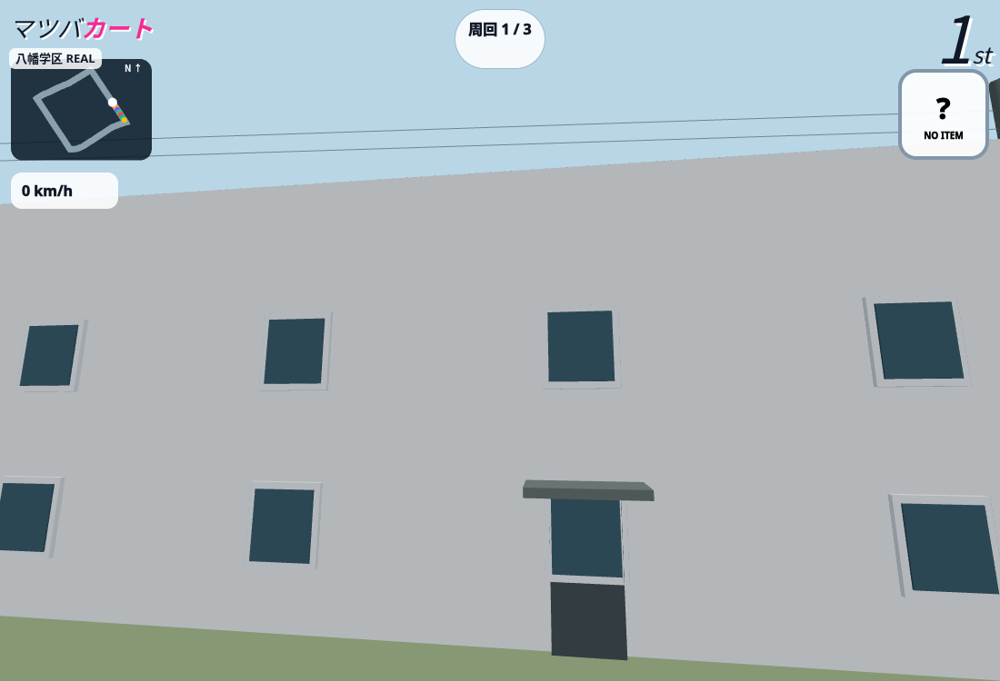
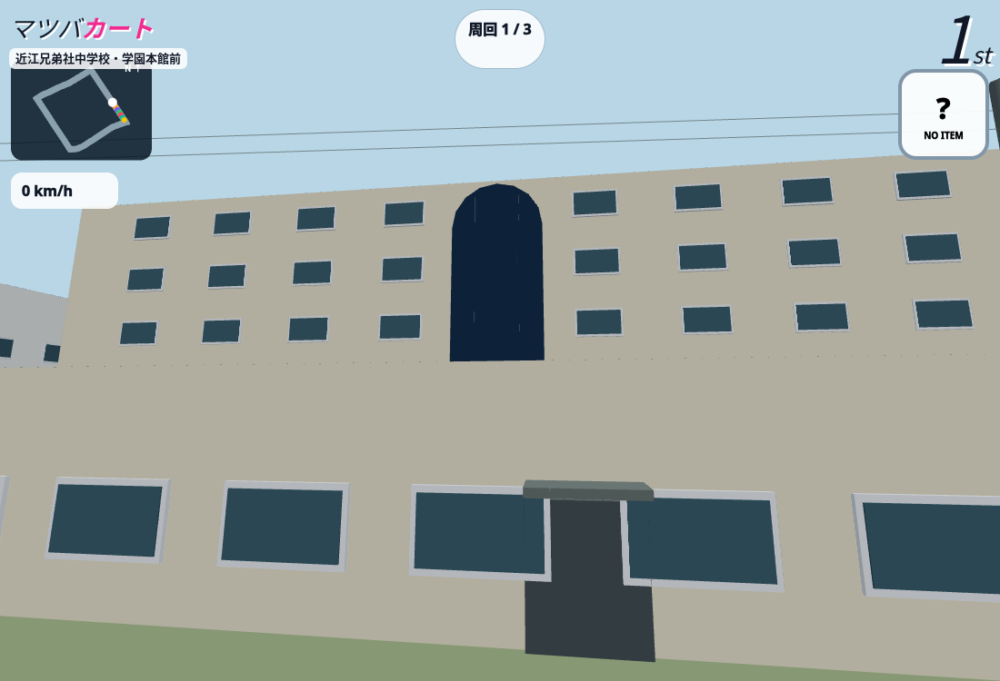
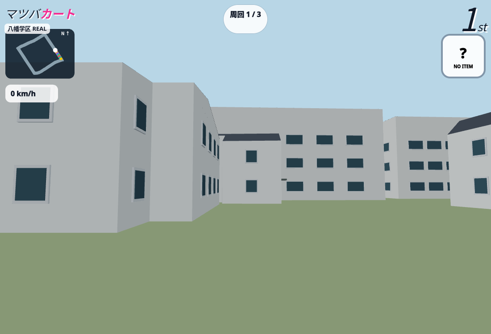
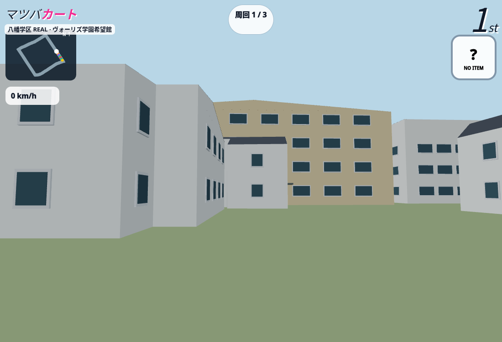
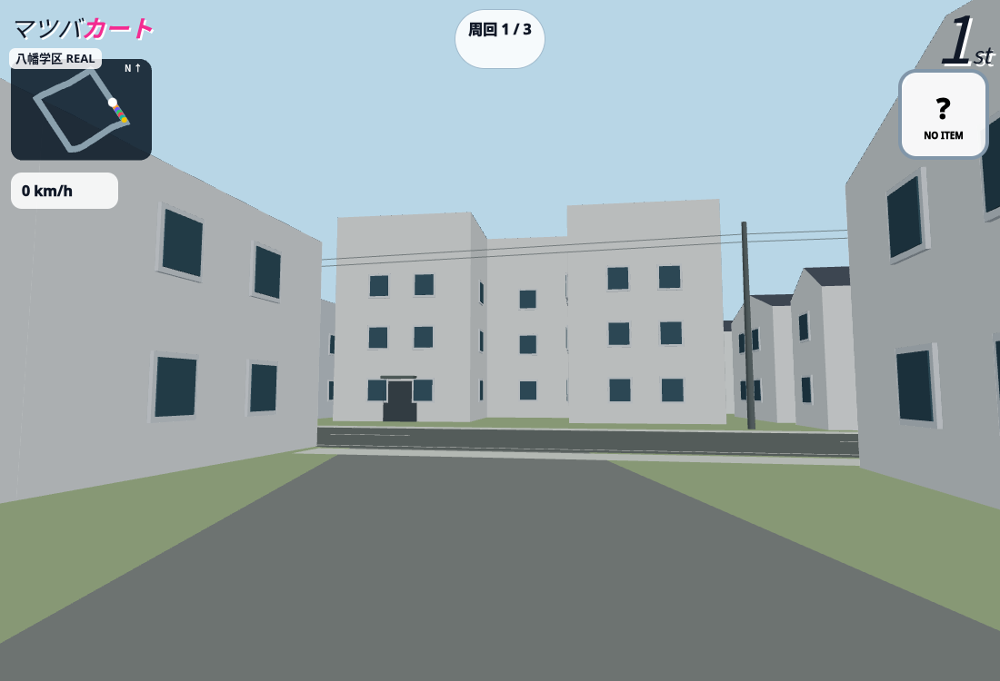
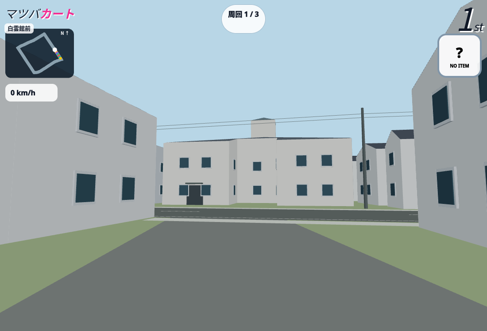

目印の再現 · 八幡学区 REAL
資料で分かった外観だけを個別反映。写真は転載・ゲーム素材化せず、公式サイトへのリンクを掲載しています。国土地理院の航空写真は照合ツール内で北向き・正射投影で比較できます。撮影日、外壁色の正確なRGB、写真の位置・レンズ条件には未確認部分があります。
八幡中学校前


原資料を開く · 同じ保存視点を照合ツールで開く（本人限定）
確認できた情報
- 校舎の中庭側の一翼は3段の窓、明るい壁、青灰色の傾斜屋根
推定・未確認
- 校舎全翼・実測高さ・窓位置・門の細部
- 学校案内の撮影位置は不明。登録カメラは道路側の比較用
視点・画角は原写真のEXIFから測定したものではありません。ゲームの変更前後は同じ保存カメラです。
近江兄弟社中学校・学園本館前


原資料を開く · 同じ保存視点を照合ツールで開く（本人限定）
確認できた情報
- 公式説明で5階、5階は礼拝堂
- 明るい上部外壁、濃いレンガ基壇、正面中央のアーチ状ガラス
推定・未確認
- 実測高さ、正確な色値、背面、屋根端部、入口アーチの寸法
- 前面ポリゴン445902866との対応・4.3mの高さは推定
視点・画角は原写真のEXIFから測定したものではありません。ゲームの変更前後は同じ保存カメラです。
ヴォーリズ学園希望館前


原資料を開く · 同じ保存視点を照合ツールで開く（本人限定）
確認できた情報
- 公式説明で4階
- クリーム系外壁と橙茶系の屋根、低い入口棟
推定・未確認
- 低い入口棟の別立体化、レンガ部分、実測高さ、屋根結合
視点・画角は原写真のEXIFから測定したものではありません。ゲームの変更前後は同じ保存カメラです。
白雲館前


原資料を開く · 同じ保存視点を照合ツールで開く（本人限定）
確認できた情報
- 木造2階建て、寄棟、太鼓楼、総高12.60m（公式パンフレット）
- 白系外壁、灰色屋根
推定・未確認
- OSM面積460.47㎡と公開建築面積305.85㎡の相違
- 本体軒高、太鼓楼寸法・位置、附属部分、色値
視点・画角は原写真のEXIFから測定したものではありません。ゲームの変更前後は同じ保存カメラです。
交差点と今後の対象
多賀・玉木・小幡上筋はOSMの名称と座標のみ確認。信号・看板・電柱は未照合です。希望館の低い入口棟、学校の別翼・体育館、周辺住宅、白雲館の附属部分と輪郭面積差は今後の確認対象です。
建物は8557棟、合成補完0棟、道路・固定レースルート・元の建物輪郭は維持しています。
地理情報：© OpenStreetMap contributors（ODbL）／国土地理院ベクトルタイル提供実験を加工。掲載画像はゲームの画面で、原資料写真の転載ではありません。